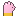

Pluiswantjes- "Warm, zacht en toch een stevige klap."
- "Gebreid door een oma-guh."
Base stats per levelBasisstats per level
| Level | StrengthKracht | DefenceVerdediging |
|---|---|---|
| 1 | 2.5 | 2.5 |
| 10 | 7 | 7 |
| 20 | 12 | 12 |
| 30 | 17 | 17 |
| 40 | 22 | 22 |
| 50 | 27 | 27 |
Times the rarity factor (Gewoon x1.00 ... Guhddelijk x1.75), plus the rolled bonuses, stars and sockets.Maal de zeldzaamheidsfactor (Gewoon x1,00 ... Guhddelijk x1,75), plus de gerolde bonussen, sterren en sokjes.
Where to get itWaar te krijgen
Hidden by your spoiler setting.Verborgen door je spoilerinstelling.